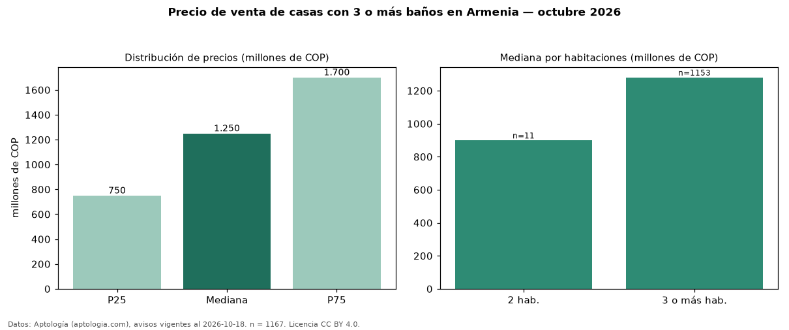

Precio de venta de casas con 3 o más baños en Armenia — octubre 2026
En Armenia, la mediana de precio de venta de casas con 3 o más baños es COP 1,25 mil millones, según 1.167 avisos vigentes. Frente a la mediana de todas las casas en venta de Armenia (COP 1,00 mil millones, n = 1.460), queda 25 % por encima; este segmento reúne el 80 % de esos avisos. Por metro cuadrado, la mediana es COP 4,68 millones/m² (n = 1083), 5 % por encima del conjunto de referencia (COP 4,44 millones/m²). El área mediana anunciada es 251 m². El segmento con más oferta es el de 3 o más habitaciones (1.153 avisos, mediana COP 1,28 mil millones); pasar de 2 habitaciones a 3 o más habitaciones cambia la mediana +42 %. La administración mediana declarada es COP 650.000 al mes (n = 550). La mitad central de los avisos va de COP 750 millones a COP 1,70 mil millones (razón 2,3), una dispersión alta. El estrato más frecuente es 5 (51 % de los avisos con estrato). Datos: Aptología (aptologia.com), CC BY 4.0 — https://www.aptologia.com/venta/armenia. Archivos: PDF, CSV con las cifras y gráfica PNG.

| Avisos únicos | 1167 |
|---|---|
| Percentil 25 | COP 750.000.000 |
| Mediana | COP 1.250.000.000 |
| Percentil 75 | COP 1.700.000.000 |
| Mediana por m² | COP 4.683.195 |
Fuente: avisos vigentes de portales inmobiliarios recopilados por Aptología, deduplicados (mínimo 30 avisos únicos por celda). Precios pedidos, no cerrados. Fecha: 2026-10-18.